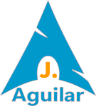

Hyperblog
Aprendiendo a Utilizar GitHub
Te explico que aprendí respecto a Git y GitHub

Que es Git?
Te explico lo que comprendí del curso!
Git es el sistema de control de versiones más moderno y popular del mundo. Git proporciona herramientas que facilitan el desarrollo del código entre un equipo de desarrolladores de manera rápida e inteligente. Además, podrás comparar los cambios realizados a lo largo del tiempo, ver quién modificó algo en el código del software y conocer en qué momento se introdujo un cambio que generó un error en tu proyecto, facilitando la opción de revertirlo. Ideado por el sr. Linus Torvalds (Creador también del Kernel de LINUX). Esto al ver que los sistemas que existían en su momento para llevar un control de versiones los sentía ineficiente. Linus Torvaldsalgunos comandos
- git init Creará un nuevo repositorio local.
- git add Agrega cambios y los prepara para ser trackeados.
- git commit Enviara los cambios a nuestro directorio de git. Agregando un comentario para detallar los cambios que se han realizado.
- git config Establece una configuración específica de usuario: email, ID de usuario entre otras cosas.
- git status Proporciona informacion general sobre la rama en la que te encuentras.
- git checkout Crea ramas y te ayuda a navegar entre ellas.
- git branch Se usa para listar, crear o borrar ramas.
- git tag Marca commits específicos.
- git diff Enlista las diferencia de manrea marcada entre una version del codigo que estamos trabajando.
- git log Historial del repositorio listando ciertos detalles de la confirmación.
- git resetResetear el index y el directorio de trabajo al último estado de confirmación.
- git rm Remover archivos del index y del directorio de trabajo.
- git stash Guardará momentáneamente los cambios que no están listos para ser confirmados.
- git show Mostrar información sobre cualquier objeto git.
- git fetch Permite buscar todos los objetos de un repositorio remoto que actualmente no se encuentran en el directorio de trabajo local.
- git merge Fusiona una rama con otra rama activa.
- git clone Descarga el código fuente existente desde un repositorio remoto..
- git pull Fusiona todos los cambios que se han hecho en el repositorio remoto con el directorio de trabajo local.
- git push Envía tus commits al repositorio remoto.
- git revertDeshacer los cambios que hemos hecho.
Que es GitHub?
GitHub es una plataforma de desarrollo colaborativo para alojar proyectos utilizando el sistema de control de versiones Git. Se utiliza principalmente para la creación de código fuente de programas de ordenador. Actualmente es propiedad de Microsoft.
Ventajas de GitHub
Existe un gran número de razones que convierten a GitHub en una gran opción para el control y
gestión de tus
proyectos de código. Aquí algunas de ellas:
- GitHub permite que alojemos proyectos en repositorios de forma gratuita
- Te brinda la posibilidad de personalizar tu perfil en la plataforma
- Los repositorios son públicos por defecto. Sin embargo, GitHub te permite también alojar
tus proyectos de forma privada - Puedes crear y compartir páginas web estáticas con GitHub Pages
- Facilita compartir tus proyectos de una forma mucho más fácil y crear un portafolio
- Te permite colaborar para mejorar los proyectos de otros y a otros mejorar o aportar a los tuyos
- Ayuda reducir significativamente los errores humanos y escribir tu código más rápido con GitHub Copilot
GitHub es una muy buena herramienta!!!